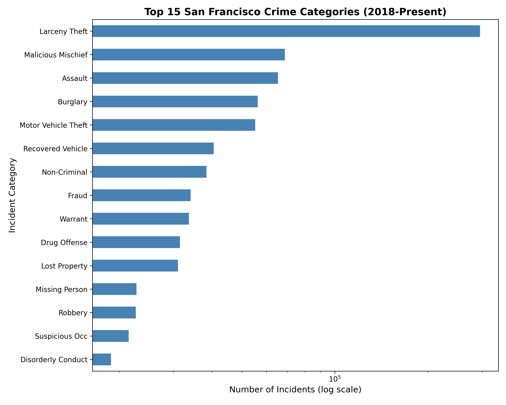

This site features interactive data visualizations about crime in San Francisco.

To see the where cars are most likely to be stolen on a sundays, click the link below:
View Theft Probability Map on sundaysTo see where in general theft/larceny is most common, click the link below:
View Crime Location Interactive MapTo see the Drug/Narcotic Heatmap by Time, look below and see how it changes over time by pressing the play button: